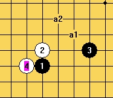

明教大残月人民币悬赏题（共四题）
#1 <font color="red">明教大残月人民币悬赏题（共四题）</font> 作者：失落刀 发表时间：2009-11-25 19:33:24
=======上图对应的爱五子棋谱代码如下，以便你拆解：========
h8h9k9j10i7
======================================================
题目一：见上图，如图是该4的黑必胜一打，现求必胜二打5的地毯谱（悬赏人民币100元）。要求：谱无原则性错漏，并要求及时为谱打上补丁（如果需要的话。）
请有志青年兄台裁决谁的答案符合要求，然后请将收款银行、卡号、名字等发给有志青年，转发给我。
备注：10天后接受应征。若10天后不接收应征，本人承诺无偿提供问题的地毯答案。
悬赏金说明：一个问题只提供一份悬赏。
有效期一年。
［ 逆刃 于 2009-11-25 19:51:57 时花20金币送鲜花一朵］
［此帖子已被 失落刀 在 2011-5-5 5:58:27 编辑过］
#2 Re:大残月人民币悬赏题（共四题） 作者：失落刀 发表时间：2009-11-25 19:43:05
=======上图对应的爱五子棋谱代码如下，以便你拆解：========
h8h9k9g8j10
======================================================
题目二：见上图，如图是该4的黑必胜一打，现求必胜二打5的地毯谱（悬赏人民币100元）。要求：谱无原则性错漏，并要求及时为谱打上补丁（如果需要的话。）
请有志青年兄台裁决谁的答案符合要求，然后请将收款银行、卡号、名字等发给有志青年，转发给我。
备注：10天后接受应征。若10天后不接收应征，本人承诺无偿提供问题的地毯答案。
悬赏金说明：一个问题只提供一份悬赏。
有效期一年。
#3 Re:大残月人民币悬赏题（共四题） 作者：失落刀 发表时间：2009-11-25 19:44:23
=======上图对应的爱五子棋谱代码如下，以便你拆解：========
h8h9k9g9i9
======================================================
题目三：见上图，如图是该4的黑必胜一打，现求必胜二打5的地毯谱（悬赏人民币100元）。要求：谱无原则性错漏，并要求及时为谱打上补丁（如果需要的话。）
请有志青年兄台裁决谁的答案符合要求，然后请将收款银行、卡号、名字等发给有志青年，转发给我。
备注：10天后接受应征。若10天后不接收应征，本人承诺无偿提供问题的地毯答案。
悬赏金说明：一个问题只提供一份悬赏。
有效期一年。
#4 Re:大残月人民币悬赏题（共四题） 作者：失落刀 发表时间：2009-11-25 19:48:46
=======上图对应的爱五子棋谱代码如下，以便你拆解：========
h8h9k9i9
======================================================
题目四：见上图，现求黑两打必胜地毯谱、或白必胜地毯谱（悬赏人民币200元）。要求：谱无原则性错漏，并要求及时为谱打上补丁（如果需要的话。）
请有志青年兄台裁决谁的答案符合要求，然后请将收款银行、卡号、名字等发给有志青年，转发给我。
备注：10天后接受应征。若10天后不接收应征，本人承诺无偿提供问题的地毯答案。
悬赏金说明：一个问题只提供一份悬赏。
有效期一年。
#5 Re:大残月人民币悬赏题（共四题） 作者：下下棋 发表时间：2009-11-25 19:53:56
备注：10天后接受应征。若10天后不接收应征，本人承诺无偿提供问题的地毯答案。
不懂
失落刀答复：“悬赏贴发后10天内只私下接受本人某些朋友的应征答案，若答案无误，答案本人承诺无偿公开；若10天内未征集到朋友的正确答案，10天后则所有人的应征都会被接受”
#6 Re:大残月人民币悬赏题（共四题） 作者：失落刀 发表时间：2009-11-25 19:55:54
特别备注：应征人在有效期内跟帖上传答案，要求无偿、公开。应征人必须理解若所提供答案不被有志认可，将得不到悬赏金并会导致所传答案被他人利用的可能。
本楼所有帖子请有志及论坛众棋友监督！！！
问题一、二、三若除了黑五一打胜，其他黑五均败得话，这种答案也属于满足要求。仍属悬赏之列。
特别鸣谢逆刃提供本次悬赏题目！
#7 Re:大残月人民币悬赏题（共四题） 作者：战龙在野 发表时间：2009-11-25 20:28:42
第一图我试了下，比较麻烦，我发上来大家讨论一下，如果谁拆出白胜也别BS我。。。。
学习发图中。。。
#8 Re:大残月人民币悬赏题（共四题） 作者：战龙在野 发表时间：2009-11-25 20:41:37
我的RENA怎么还可以直接编辑的？汗，删了吧#9 Re:大残月人民币悬赏题（共四题） 作者：战龙在野 发表时间：2009-11-25 21:02:00
白快胜了。。哈哈
#10 Re:大残月人民币悬赏题（共四题） 作者：战龙在野 发表时间：2009-11-25 21:06:57
不对头。。4这个点其实很有潜力，有强防。。基本没指望了。我先挂了，诸君努力。。［ 失落刀 于 2009-11-25 22:03:33 时花20金币送鲜花一朵］感谢支持！
#11 Re:大残月人民币悬赏题（共四题） 作者：忧郁的双眼 发表时间：2009-11-25 22:10:33
战龙已经挂了
哪位英雄顶上？
#12 Re:大残月人民币悬赏题（共四题） 作者：浪人痴痴 发表时间：2009-11-26 5:08:20
期待，
#13 Re:大残月人民币悬赏题（共四题） 作者：刀魂 发表时间：2009-11-26 10:01:07
花影，你是搞笑吗？有些你发图其中的 一打都必胜不了，何况两打必胜！不要轻易提钱的事，假如别人真正能地毯（其实是根本不可能的，斜1那么强
悍，不还有个最强6没有地毯干净吗，说实在的，斜1最强6，无法地毯，除非是 19*19路的棋盘，还有微小的希望，更何况是残月妖刀白4的两打问题）。
对于花影这个帖子中的题目，老衲也 挂 了吧！
杯具啊！！！
期待 洗具 ing ！！！
失落刀答复：第一，没有搞笑。
第二，问题一、二、三的一打地毯胜无疑义。
第三，提钱仅仅是为了表达个人的小小感激，无他。
#14 Re:大残月人民币悬赏题（共四题） 作者：天涯独行客 发表时间：2009-11-26 13:16:34
呵呵，各位大大加油啊，世上无难事，只怕有心人，这个奖励我可是志在必得的！
为了让大家少走弯路，我提供点最新的研究进展给大家！
=======上图对应的爱五子棋谱代码如下，以便你拆解：========
h8h9k9g8i10
======================================================
上面这个变化是黑必败的，昨天花影推荐的，我今天本想拆出必胜，没想到必败了，晕死！
=======上图对应的爱五子棋谱代码如下，以便你拆解：========
h8h9k9g8g9
======================================================
目前只有上面这个点没有结论了，据花影介绍，这个4一打黑必胜，其余的5点只有2个没有结论了，现在我解决了一个，就只这个点了，大家加油啊！
失落刀答复：你的一图的5应该在I11，现我没有明确结论。感谢支持，鲜花一朵。
［ 失落刀 于 2009-11-26 17:28:50 时花20金币送鲜花一朵］
［ 失落刀 于 2009-12-3 7:48:47 时奖励此帖[金币加 20 威望加1］
#15 Re:大残月人民币悬赏题（共四题） 作者：淡红的秋樱 发表时间：2009-11-26 15:22:58
=======上图对应的爱五子棋谱代码如下，以便你拆解：========
h8h9i10j10k9
======================================================
鉴于难度太高。即使后面加两个0都不高兴去弄。
=======上图对应的爱五子棋谱代码如下，以便你拆解：========
h8h9i10i9k9
======================================================
这个黑小优地毯也复杂
［ 失落刀 于 2009-11-26 22:15:39 时花20金币送鲜花一朵］
#16 Re:大残月人民币悬赏题（共四题） 作者：流逝 发表时间：2009-11-27 6:55:44
 等正规比赛有妖刀的时候我再来拆这个
等正规比赛有妖刀的时候我再来拆这个
#17 Re:大残月人民币悬赏题（共四题） 作者：方圆之外 发表时间：2009-11-27 12:12:40
 同上。。
同上。。
#18 Re:大残月人民币悬赏题（共四题） 作者：小丸.net 发表时间：2009-11-27 13:28:29
噫，下棋还真能赚钱啊～
#19 Re:大残月人民币悬赏题（共四题） 作者：忧郁的双眼 发表时间：2009-11-27 13:52:41
其实等于正式比赛有了妖刀
山口与妖刀同型
［ 失落刀 于 2009-11-27 21:43:03 时花20金币送鲜花一朵］
#20 Re:大残月人民币悬赏题（共四题） 作者：五子痴 发表时间：2009-11-28 7:38:59
 太低估论坛高手的拆棋能力了 这帖子会让你倾家荡产...
太低估论坛高手的拆棋能力了 这帖子会让你倾家荡产...
#21 Re:大残月人民币悬赏题（共四题） 作者：失落刀 发表时间：2009-11-28 11:23:17
就500元啊，不会倾家荡产的老大。。。
#22 Re:大残月人民币悬赏题（共四题） 作者：战龙在野 发表时间：2009-11-29 12:28:41
第一个4我感觉接近必胜。。我在整理，看看还有没有唯一，没有就发出来
失落刀回复：期待战龙给我们带来惊喜！
#23 Re:大残月人民币悬赏题（共四题） 作者：砍 发表时间：2009-11-29 12:41:44
等饼中
#24 Re:大残月人民币悬赏题（共四题） 作者：砍 发表时间：2009-11-29 15:50:24
=======上图对应的爱五子棋谱代码如下，以便你拆解：========
h8h9k9j10g8
======================================================个人感觉这个5作为2打点不错，应该可以地毯
失落刀回复：这个5，我以前以为可以必胜，可是逆刃发现了唯一防，期待你来解决。
#25 Re:大残月人民币悬赏题（共四题） 作者：鬼冢弹间 发表时间：2009-11-29 20:30:29
说实话 我搞不太清楚楼主的意思 ， 比如第二个问题 你是想要这个的必胜
=======上图对应的爱五子棋谱代码如下，以便你拆解：========
h8h9k9g8j10
======================================================
还是要这个的必胜？
=======上图对应的爱五子棋谱代码如下，以便你拆解：========
h8h9k9g8i11
======================================================
［ 失落刀 于 2009-12-3 7:49:39 时奖励此帖[金币加 20 威望加1］
#26 Re:大残月人民币悬赏题（共四题） 作者：失落刀 发表时间：2009-11-29 21:34:15
25楼的第一图的地毯已经有了啊，要其他5的地毯。#27 Re:大残月人民币悬赏题（共四题） 作者：鬼冢弹间 发表时间：2009-11-29 21:47:55
楼上的，我没有终结者 不知道怎么做地毯， 但是自己拆了 绝大部分强的变化 可能漏了一点 但也差不多了 这种情况可以不#28 Re:大残月人民币悬赏题（共四题） 作者：失落刀 发表时间：2009-11-29 22:17:14
一定要确切的可靠地结论，是否正确以论坛各位的意见为参考，然后有志来审定。
另，连珠终结者很多棋友都有破解版的，比如06.07.08.09版。
当然了哈，我没钱买正版，作为小4的朋友，俺也没有破解版哈。
#29 Re:大残月人民币悬赏题（共四题） 作者：战龙在野 发表时间：2009-11-29 22:33:01
第一个四完成~~要不要发上来？
#30 Re:大残月人民币悬赏题（共四题） 作者：战龙在野 发表时间：2009-11-29 22:41:03
饼来啦~~速度来领~吃完看看有没有陷~
祝贺战龙，另外请大家来检查漏洞哈！----失落刀
［ 失落刀 于 2009-11-29 22:48:36 时花20金币送鲜花一朵］
［ 白河愁 于 2009-11-30 2:44:27 时花20金币送鲜花一朵］
［ 失落刀 于 2009-12-2 22:19:16 时奖励此帖[金币加 20 威望加1］
［ 隐藏菜系 于 2009-12-9 23:33:57 时花20金币送鲜花一朵］
#31 Re:大残月人民币悬赏题（共四题） 作者：战龙在野 发表时间：2009-11-29 22:41:58
2个谱没有合，懒~可以对照一下。。。#32 Re:大残月人民币悬赏题（共四题） 作者：逆刃 发表时间：2009-11-29 23:40:41
战龙的速度好快啊，我看了下谱，除了一些弱防没有涉及到以及有些点的谱太过简单外，必胜应该是没有问题。
#33 Re:大残月人民币悬赏题（共四题） 作者：忧郁的双眼 发表时间：2009-11-30 0:29:33
老龙这样的才是我喜欢的#34 Re:大残月人民币悬赏题（共四题） 作者：白河愁 发表时间：2009-11-30 2:45:15
围观
领饼
#35 Re:大残月人民币悬赏题（共四题） 作者：战龙在野 发表时间：2009-11-30 7:22:32
第一个没有的到第二个上面找。。第二个没有的到第一个上面找，或者合起来。。一个是我在公司做的，一个是在家做的。。
#36 Re:大残月人民币悬赏题（共四题） 作者：茗弈小刀 发表时间：2009-11-30 11:19:51
老龙的强悍,那是必须的!#37 Re:大残月人民币悬赏题（共四题） 作者：鬼冢弹间 发表时间：2009-11-30 12:34:42
第一个是最容易的 接来来越来越难，#38 Re:大残月人民币悬赏题（共四题） 作者：忧郁的双眼 发表时间：2009-11-30 13:41:59
在公司做谱
我去告你老板
#39 Re:大残月人民币悬赏题（共四题） 作者：砍 发表时间：2009-12-1 16:28:20
=======上图对应的爱五子棋谱代码如下，以便你拆解：========
h8h9k9j10i8i10j8k8g8f8i7l10k10j9l7i6
======================================================怎么地毯阿？
［ 失落刀 于 2009-12-1 21:35:01 时花20金币送鲜花一朵］辛苦。
#40 Re:大残月人民币悬赏题（共四题） 作者：没定式随便下 发表时间：2009-12-1 17:49:53
回楼上。
=======上图对应的爱五子棋谱代码如下，以便你拆解：========
h8h9k9j10i8i10j8k8g8f8i7l10k10j9l7i6j6k5j7k7k6j5l5m4l6
======================================================
=======上图对应的爱五子棋谱代码如下，以便你拆解：========
h8h9k9j10i8i10j8k8g8f8i7l10k10j9l7i6j6k5j7k7k6m8g6
======================================================
［ 失落刀 于 2009-12-1 21:36:24 时花20金币送鲜花一朵］辛苦了
#41 Re:大残月人民币悬赏题（共四题） 作者：没定式随便下 发表时间：2009-12-1 17:51:21
刚刚看了战龙的谱，里面没有这两个点。
=======上图对应的爱五子棋谱代码如下，以便你拆解：========
h8h9k9j10i8j8j9k8g6h7f6i9e6h6
======================================================
=======上图对应的爱五子棋谱代码如下，以便你拆解：========
h8h9k9j10i8j8j9k7
======================================================
［ 失落刀 于 2009-12-1 21:37:18 时花20金币送鲜花一朵］辛苦了
#42 Re:大残月人民币悬赏题（共四题） 作者：战龙在野 发表时间：2009-12-1 22:42:37
这2个不难啊，第一图简单杀，第二图是漏点了，我的solver没发现这个点。。。 8.rar
8.rar［ 失落刀 于 2009-12-2 8:10:03 时花20金币送鲜花一朵］
#43 Re:大残月人民币悬赏题（共四题） 作者：战龙在野 发表时间：2009-12-1 22:59:05
=======上图对应的爱五子棋谱代码如下，以便你拆解：========
h8h9k9j10i8i10j8k8g8f8i7l10k10j9l7i6j6k5j7k7k6j5g5h6g9f10g7g6f6
=====================================================
这个40楼有了哈
［ 失落刀 于 2009-12-2 8:10:27 时花20金币送鲜花一朵］
#44 Re:大残月人民币悬赏题（共四题） 作者：忧郁的双眼 发表时间：2009-12-2 11:31:09
41楼两个非常容易杀［ 战龙在野 于 2009-12-2 12:23:09 时花50金币砸了你一个臭鸡蛋］
#45 Re:大残月人民币悬赏题（共四题） 作者：忧郁的双眼 发表时间：2009-12-2 17:36:55
老色龙太不象话了［ 战龙在野 于 2009-12-2 21:03:14 时花20金币送鲜花一朵］
#46 Re:大残月人民币悬赏题（共四题） 作者：逆刃 发表时间：2009-12-2 17:50:08
感谢战龙的提示（虽然不是地毯谱），这个4的两打已经完成。第一个悬赏问题可以下架了。呵呵。［ 失落刀 于 2009-12-2 22:13:45 时花20金币送鲜花一朵］
#47 Re:大残月人民币悬赏题（共四题） 作者：失落刀 发表时间：2009-12-2 22:13:13
谢谢逆刃检查！等待有志裁决！#48 Re:大残月人民币悬赏题（共四题） 作者：小帮帮 发表时间：2009-12-7 4:19:56
第一题好像还有不少问题的
#49 Re:大残月人民币悬赏题（共四题） 作者：小帮帮 发表时间：2009-12-7 4:26:57

=======上图对应的爱五子棋谱代码如下，以便你拆解：========
h8h9k9j10i8j8j9k10i10g9h11g12
======================================================
这个甚么杀？？惭愧，小帮帮能力有限
#50 Re:大残月人民币悬赏题（共四题） 作者：小帮帮 发表时间：2009-12-7 5:00:57
原来看到的谱有错=======上图对应的爱五子棋谱代码如下，以便你拆解：========
h8h9k9j10i8j8j9k10i10g9k8l7f9i12i9i6e8f8l9m9e7
======================================================
#51 Re:大残月人民币悬赏题（共四题） 作者：有志青年 发表时间：2009-12-7 8:42:32
感谢战龙的解答，已经通过验收，请短信联系失落刀确认如何收取奖赏。
［ 失落刀 于 2009-12-7 19:29:44 时花20金币送鲜花一朵］
#52 Re:大残月人民币悬赏题（共四题） 作者：小丸.net 发表时间：2009-12-7 10:53:33
有志,我建议你要弄点税收,像这样的交易,至少要弄个进项12%,出项7%的税收....计战龙12元,失落刀7元.
不过失落刀和战龙可以通过支付宝交易,让有志收税的计划泡汤..
#53 Re:大残月人民币悬赏题（共四题） 作者：茗弈小刀 发表时间：2009-12-7 11:21:01
恭喜老龙!
#54 Re:大残月人民币悬赏题（共四题） 作者：小帮帮 发表时间：2009-12-7 12:55:04
惭愧中，还有问题，能提问吗？
=======上图对应的爱五子棋谱代码如下，以便你拆解：========
h8h9k9j10i8g8j8i10
======================================================
这个怎么杀啊？
#55 Re:大残月人民币悬赏题（共四题） 作者：小帮帮 发表时间：2009-12-7 12:59:10
还有这个，虽然不是很难，但对我来说也是问题之一
=======上图对应的爱五子棋谱代码如下，以便你拆解：========
h8h9k9j10i8j8j9k10i10i6
======================================================
求解，毕竟是地毯嘛
#56 Re:大残月人民币悬赏题（共四题） 作者：小帮帮 发表时间：2009-12-7 13:41:24
没人理我？？
=======上图对应的爱五子棋谱代码如下，以便你拆解：========
h8h9k9j10i8i7g8j8j9h7f8e8g7g6k10k11l7l12
======================================================
这个也蛮复杂的
［ 失落刀 于 2009-12-7 20:55:59 时奖励此帖[金币加 20 威望加1］
#57 Re:大残月人民币悬赏题（共四题） 作者：26 发表时间：2009-12-7 18:10:40
我在单位加班，回家后共享第一题战龙制作逆刃审核有志验收的地毯。#58 Re:大残月人民币悬赏题（共四题） 作者：失落刀 发表时间：2009-12-7 19:31:52
第一题逆刃检查地毯答案.rar
［ 隐藏菜系 于 2009-12-9 23:38:42 时花20金币送鲜花一朵］
#59 Re:大残月人民币悬赏题（共四题） 作者：小帮帮 发表时间：2009-12-7 19:57:44
战龙功德无量，逆刃精益求精啊#60 Re:大残月人民币悬赏题（共四题） 作者：隐藏菜系 发表时间：2009-12-9 23:38:20
厉害啊厉害~向战龙大师以及失落刀姊姊致敬！
#61 Re:大残月人民币悬赏题（共四题） 作者：叶昀 发表时间：2009-12-10 23:34:37
 顶起来，分多一点饼
顶起来，分多一点饼
#62 Re:大残月人民币悬赏题（共四题） 作者：失落刀 发表时间：2009-12-11 22:04:02
第一题的奖励100元，已经通过淘宝支付宝转账给了战龙。#63 Re:大残月人民币悬赏题（共四题） 作者：战龙在野 发表时间：2009-12-11 22:38:54
收到，已经换成1套圣魔装备，我打一年王也打不出来的。。。不错不错#64 Re:大残月人民币悬赏题（共四题） 作者：忧郁的双眼 发表时间：2009-12-11 22:51:08
老色龙。。。用网游把妹！
向我姐揭发！！！
#65 Re:大残月人民币悬赏题（共四题） 作者：失落刀 发表时间：2009-12-11 23:21:52
逆刃正在检查明教大明星谱，明教有可能随后悬赏大明星最后的疑问题。#66 Re:大残月人民币悬赏题（共四题） 作者：虎哥 发表时间：2009-12-12 10:37:42
原来失落刀是MM#67 Re:大残月人民币悬赏题（共四题） 作者：战龙在野 发表时间：2009-12-13 12:16:45
失落刀是MM？我去检查一下到底是不是~［ 失落刀 于 2009-12-13 12:22:01 时花50金币砸了你一个臭鸡蛋］
#68 Re:大残月人民币悬赏题（共四题） 作者：失落刀 发表时间：2009-12-13 12:22:30

#69 Re:大残月人民币悬赏题（共四题） 作者：忧郁的双眼 发表时间：2009-12-13 15:02:20
用我的肉身
去检查失落刀教主的真身
［ 苯酚 于 2009-12-13 20:49:22 时花50金币砸了你一个臭鸡蛋］
#70 Re:大残月人民币悬赏题（共四题） 作者：苯酚 发表时间：2009-12-13 20:49:04
 LS
LS
#71 Re:明教大残月人民币悬赏题（共四题） 作者：失落刀 发表时间：2009-12-14 19:59:50
=======上图对应的爱五子棋谱代码如下，以便你拆解：========
h8h9k9g8i11
======================================================（A）
=======上图对应的爱五子棋谱代码如下，以便你拆解：========
h8h9k9g8g9
======================================================（B）
哪个高手对A图或者B图发几个变化大家瞧瞧撒。
#72 Re:明教大残月人民币悬赏题（共四题） 作者：逆刃 发表时间：2009-12-14 20:11:24
=======上图对应的爱五子棋谱代码如下，以便你拆解：========
h8h9k9g8g9i10f7f10j10i9i11h12h10j12i12e10h7i7f11
======================================================
=======上图对应的爱五子棋谱代码如下，以便你拆解：========
h8h9k9g8g9i10f7f10j10i9i11h12h10j12i12e10e9
======================================================
=======上图对应的爱五子棋谱代码如下，以便你拆解：========
h8h9k9g8i11j10k11j11i10j12j9k8i7j8
======================================================
=======上图对应的爱五子棋谱代码如下，以便你拆解：========
h8h9k9g8i11j10k11j11i10j12j9i8
======================================================
=======上图对应的爱五子棋谱代码如下，以便你拆解：========
h8h9k9g8i11j10k11j11i10j12j9i9
======================================================
=======上图对应的爱五子棋谱代码如下，以便你拆解：========
h8h9k9g8i11j10k11j11i10j9j8i9
======================================================
这是几个没杀出来的局面，也应该是唯一吧，感兴趣的朋友可以接着拆一下。
［ 失落刀 于 2009-12-14 20:18:16 时奖励此帖[金币加 20 威望加1］
#73 Re:明教大残月人民币悬赏题（共四题） 作者：逆刃 发表时间：2009-12-14 20:13:02
=======上图对应的爱五子棋谱代码如下，以便你拆解：========
h8h9k9g8i11j10g9
======================================================
这个7不知道有没有人详细的拆过？
［ 失落刀 于 2009-12-14 20:17:48 时花20金币送鲜花一朵］
#74 Re:明教大残月人民币悬赏题（共四题） 作者：≈★真心★≈ 发表时间：2009-12-14 20:36:55
本来我不想发表什么的,不过看到大家都很热情,我就贡献一点出来吧
=======上图对应的爱五子棋谱代码如下，以便你拆解：========
h8h9k9g8i11j10g9
======================================================
#75 Re:明教大残月人民币悬赏题（共四题） 作者：失落刀 发表时间：2009-12-14 20:38:10
=======上图对应的爱五子棋谱代码如下，以便你拆解：========
h8h9k9g9j10
======================================================
问题三的选择之一见上图。
=======上图对应的爱五子棋谱代码如下，以便你拆解：========
h8h9k9g9f9
======================================================
问题三的选择之二见上图。
#76 Re:明教大残月人民币悬赏题（共四题） 作者：失落刀 发表时间：2009-12-14 20:52:15
问题二，暂时不接受其他朋友应征。
目前我在检查真心的答案。
#77 Re:明教大残月人民币悬赏题（共四题） 作者：战龙在野 发表时间：2009-12-14 21:29:56
=======上图对应的爱五子棋谱代码如下，以便你拆解：========
h8h9k9g8i11j10g9f10k11j11i10j12j9k8
======================================================
这个8是怎么杀的呢？我看过这个，要么换9，不过我没看出9哪里比较好？有什么好点呢？
#78 Re:明教大残月人民币悬赏题（共四题） 作者：战龙在野 发表时间：2009-12-14 21:45:18
=======上图对应的爱五子棋谱代码如下，以便你拆解：========
h8h9k9g8i11j10g9f10j11
======================================================
这个点有希望
#79 Re:明教大残月人民币悬赏题（共四题） 作者：≈★真心★≈ 发表时间：2009-12-14 22:06:44
=======上图对应的爱五子棋谱代码如下，以便你拆解：========
h8h9k9g8i11j10g9f10k11j11i10j12j9k8i7j8k7
======================================================
［ 失落刀 于 2009-12-20 22:26:09 时奖励此帖[金币加 20 威望加1］
#80 Re:明教大残月人民币悬赏题（共四题） 作者：≈★真心★≈ 发表时间：2009-12-14 22:12:29
这个17后,18唯一,19手关键,20手有很多应对,但是黑也近胜了,关键在巧妙的做棋,大家可以好好找找吧
#81 Re:明教大残月人民币悬赏题（共四题） 作者：逆刃 发表时间：2009-12-14 22:27:53
=======上图对应的爱五子棋谱代码如下，以便你拆解：========
h8h9k9g8i11j10k11j11i10j12j9k8i7j8g9f10k7
======================================================
79楼的图是和这个局面相通的。
目前还有几个没有拆出来的如下：
=======上图对应的爱五子棋谱代码如下，以便你拆解：========
h8h9k9g8i11j10k11j11i10j12j9k8i7j8g9f10k7l8m8i8j7l7l9i9
======================================================
=======上图对应的爱五子棋谱代码如下，以便你拆解：========
h8h9k9g8i11j10k11j11i10j12j9k8i7j8g9f10k7l8m8l7
======================================================
#82 Re:明教大残月人民币悬赏题（共四题） 作者：≈★真心★≈ 发表时间：2009-12-14 22:40:34
=======上图对应的爱五子棋谱代码如下，以便你拆解：========
h8h9k9g8i11j10g9f10k11j11i10j12j9k8i7j8k7l8m8i8j7l7l9i9h4
======================================================
#83 Re:明教大残月人民币悬赏题（共四题） 作者：≈★真心★≈ 发表时间：2009-12-14 22:49:44
另外的20,也都在下面复杂做棋#84 Re:明教大残月人民币悬赏题（共四题） 作者：逆刃 发表时间：2009-12-14 22:57:01
这个由于后面没时间就没怎么拆，82楼的图应该是可以必胜的，不知道其它的20怎么杀。#85 Re:明教大残月人民币悬赏题（共四题） 作者：战龙在野 发表时间：2009-12-15 8:07:00
=======上图对应的爱五子棋谱代码如下，以便你拆解：========
h8h9k9g8i11j10g9f10k11j11i10j12j9k8i7j8k7l8m8j7
======================================================
这个20何解？
#86 Re:明教大残月人民币悬赏题（共四题） 作者：战龙在野 发表时间：2009-12-15 8:18:45
=======上图对应的爱五子棋谱代码如下，以便你拆解：========
h8h9k9g8i11j10g9f10k11j11i10j12j9k8i7j8k7l8m8j7l9m9i8i9i4
======================================================
这个20不行
#87 Re:明教大残月人民币悬赏题（共四题） 作者：战龙在野 发表时间：2009-12-15 8:21:13
=======上图对应的爱五子棋谱代码如下，以便你拆解：========
h8h9k9g8i11j10g9f10k11j11i10j12j9k8i7j8k7l8m8l7l9i9i4
======================================================
同理这个可能也不行
#88 Re:明教大残月人民币悬赏题（共四题） 作者：战龙在野 发表时间：2009-12-15 8:24:30
理论上I4可以杀每个20的。。#89 Re:明教大残月人民币悬赏题（共四题） 作者：战龙在野 发表时间：2009-12-15 8:33:25
有希望
#90 Re:明教大残月人民币悬赏题（共四题） 作者：战龙在野 发表时间：2009-12-15 9:06:08
=======上图对应的爱五子棋谱代码如下，以便你拆解：========
h8h9k9g8i11g9j10h12g10j8
======================================================
这个你们是怎么杀出的？有没有唯一防？
#91 Re:明教大残月人民币悬赏题（共四题） 作者：啊呆 发表时间：2009-12-15 11:16:57
精力旺盛的一群人。。。#92 Re:明教大残月人民币悬赏题（共四题） 作者：忧郁的双眼 发表时间：2009-12-15 12:53:57
老色龙又想买装备泡MM
我告密去
#93 Re:明教大残月人民币悬赏题（共四题） 作者：真树 发表时间：2009-12-16 13:25:31
真心大师太强了 贡献大了 两年前就研究出这个黑7理论必胜？#94 Re:明教大残月人民币悬赏题（共四题） 作者：唐门小虎 发表时间：2009-12-19 17:56:09
从第一页看到10页，战龙和传说中的一样强大，真心大师的饼暂时没发现，期待早日做出，耐心等待品尝
#95 Re:明教大残月人民币悬赏题（共四题） 作者：鬼冢弹间 发表时间：2009-12-19 21:09:24
真心的饼做不出的 那个根本必胜不了 ，而且也不是他的研究#96 Re:明教大残月人民币悬赏题（共四题） 作者：失落刀 发表时间：2009-12-19 22:03:51
95楼的棋友，我们一起把注意力集中在悬赏题目上吧。
不需要评价其他人的棋谱的。
多年来真心和朋友们一起拆过很多妖刀的。
继续接受第二题以及后续题目应征。
#97 Re:Re:明教大残月人民币悬赏题（共四题） 作者：逆刃 发表时间：2009-12-20 13:52:38
大残月第二个悬赏题已经解决，饼来了，大伙接住啊。最好来点威望和鲜花。呵呵。欢迎大家指正错误！
我还是用的我原来的那个7杀出来的，对真心LS的那个7没什么研究。在此要感谢一下战龙在野和砍家族老弟帮我解决了最后一个26，两个人用的两种不同的解法，我在谱里面也都保存了。其余的都是自己解决的。
=======上图对应的爱五子棋谱代码如下，以便你拆解：========
h8h9k9g8i11j10k11j11i10j12j9k8i7j8g9f10k7l8m8l7l9i9i4j6j4h4
======================================================
大残月第二题解答——逆刃.rar［ 失落刀 于 2009-12-20 15:09:17 时奖励此帖[金币加 20 威望加1］
［ 失落刀 于 2009-12-20 15:09:36 时花20金币送鲜花一朵］
［ 失落刀 于 2009-12-20 15:39:19 时花20金币送鲜花一朵］
［ 白河愁 于 2009-12-21 1:23:51 时花20金币送鲜花一朵］
［ 白河愁 于 2009-12-21 1:24:02 时花20金币送鲜花一朵］
#98 Re:明教大残月人民币悬赏题（共四题） 作者：砍 发表时间：2009-12-20 14:03:26
老哥威武，第一个撒［ 索非亚 于 2009-12-20 18:08:51 时花20金币送鲜花一朵］
#99 Re:明教大残月人民币悬赏题（共四题） 作者：真树 发表时间：2009-12-20 14:38:44
真心发的7手后 13手之前难必胜 但逆刀的7之后13之前简单必胜 15之后 和真心的7相通 之后就不难了
#100 Re:明教大残月人民币悬赏题（共四题） 作者：失落刀 发表时间：2009-12-20 15:13:35
嘿嘿，祝贺明教之刃。先让各位朋友检查一下吧。若有志根据大家意见同意验收之后，奖励随后奉上！#101 Re:明教大残月人民币悬赏题（共四题） 作者：忧郁的双眼 发表时间：2009-12-20 15:14:35
呵呵 速度很快的说#102 Re:明教大残月人民币悬赏题（共四题） 作者：失落刀 发表时间：2009-12-20 15:23:19
首先感谢真心提供棋谱，但是我检查的比较慢，有些未地毯局面没有能够做到地毯。
其次感谢大家热情应征！
今天查我的英语职称考试成绩，过关了。嘿嘿！现在开始学计算机，力争下次计算机职称考试过关！
#103 Re:明教大残月人民币悬赏题（共四题） 作者：忧郁的双眼 发表时间：2009-12-20 15:27:06
下次职称上去了
再拿出五百来
哇哈哈
［ 失落刀 于 2009-12-20 15:38:41 时花20金币送鲜花一朵］
#104 Re:明教大残月人民币悬赏题（共四题） 作者：战龙在野 发表时间：2009-12-20 16:00:44
G9那个6怎么不发？#105 Re:明教大残月人民币悬赏题（共四题） 作者：战龙在野 发表时间：2009-12-20 16:10:02
说实在的，这个能解决应该是真心的功劳，真心提出这个17-23以后我认为这个6已经没什么问题了，G9那个6我还有个问题没解决呢。。。#106 Re:Re:明教大残月人民币悬赏题（共四题） 作者：逆刃 发表时间：2009-12-20 16:29:16
不好意思，刚刚发现谱里面有个6是一打5的通型，我发的谱里面没有。
现在我就把这个4的两打必胜谱一起送给大家吧，如果还有通型没谱的情况请提出来。

大残月常见4两打必胜谱——逆刃.rar
［ 失落刀 于 2009-12-20 17:52:57 时奖励此帖[金币加 20 威望加1］
［ 失落刀 于 2009-12-20 17:53:14 时花20金币送鲜花一朵］
［ 笑雨辰 于 2009-12-20 23:19:54 时花20金币送鲜花一朵］
#107 Re:明教大残月人民币悬赏题（共四题） 作者：砍 发表时间：2009-12-20 16:44:28
啊啊啊啊啊啊啊啊啊啊啊啊！没搞错吧，功劳咋是真心的了阿？不是逆刃的么？早知道好几月前我应该把我的垃圾谱发出来
=======上图对应的爱五子棋谱代码如下，以便你拆解：========
h8h9k9g8i11
======================================================我的谱好几个月前就做到第5步，我觉得可以必胜
但我就是做不出来，现在有人做出来了，那这功劳应该是我的吧，我的思路是正确的。
如果大家觉得我说的不对，那着功劳应该给谁呢？
我觉得谁发的地毯就该给谁？没作出地毯的都边靠，别说什么提供了思路，都是没意义的，我觉得这个4的功劳大部分都是逆刃的，顶逆刃
#108 Re:明教大残月人民币悬赏题（共四题） 作者：失落刀 发表时间：2009-12-20 16:46:47
那个17的通型在逆刃的谱里是很早就有的，但是逆刃一直没有做完后续。今天做完了
祝贺，请大家检查谱里面有无错漏。
#109 Re:明教大残月人民币悬赏题（共四题） 作者：失落刀 发表时间：2009-12-20 16:50:48
我手里有以前逆刃的谱，也有真心的谱。
另外逆刃和真心都是明教的人。而且他两的关系也比较好。大家不要产生误会了。
请大家检查逆刃第二题的答案以及请大家继续研究后续问题。
#110 Re:明教大残月人民币悬赏题（共四题） 作者：忧郁的双眼 发表时间：2009-12-20 17:39:21
 味道不错
味道不错
逆刃胸继续努力
我争取吃饱
#111 Re:明教大残月人民币悬赏题（共四题） 作者：苯酚 发表时间：2009-12-20 18:10:50
没奖励的时候就好拿出来了
#112 Re:明教大残月人民币悬赏题（共四题） 作者：索非亚 发表时间：2009-12-20 18:18:44
 逆刃的异想天开，真心的铜墙铁壁，砍家族的猥琐。。整个明教的熊熊火焰。。想想这一切太恐怖了。。妖刀我为你祝福。。。我代表光明女神给你加满血。。
逆刃的异想天开，真心的铜墙铁壁，砍家族的猥琐。。整个明教的熊熊火焰。。想想这一切太恐怖了。。妖刀我为你祝福。。。我代表光明女神给你加满血。。［ 失落刀 于 2009-12-20 20:10:11 时花20金币送鲜花一朵］
#113 Re:明教大残月人民币悬赏题（共四题） 作者：真树 发表时间：2009-12-20 19:45:26
 前段时间我就终结这个4了 那个变化是我告诉真心的 但真心却未经我同意放了上来 来到这个论坛 我很忧郁
前段时间我就终结这个4了 那个变化是我告诉真心的 但真心却未经我同意放了上来 来到这个论坛 我很忧郁
#114 Re:明教大残月人民币悬赏题（共四题） 作者：失落刀 发表时间：2009-12-20 20:38:25
原以为悬赏金不会发放出去的，结果问题一、二这么快就被攻克，打开这个帖子，我很忧郁。#115 Re:明教大残月人民币悬赏题（共四题） 作者：真树 发表时间：2009-12-20 20:44:04
放心吧 后面两个很有难度
［ 失落刀 于 2009-12-20 20:45:22 时花20金币送鲜花一朵］
［ 失落刀 于 2009-12-20 20:45:37 时奖励此帖[金币加 20 威望加1］0+1
#116 Re:明教大残月人民币悬赏题（共四题） 作者：粉红世家 发表时间：2009-12-20 23:29:19
第一个谱是H8
#117 Re:明教大残月人民币悬赏题（共四题） 作者：小帮帮 发表时间：2009-12-21 11:23:21
太强大了，逆刃！
#118 Re:Re:明教大残月人民币悬赏题（共四题） 作者：wd1988 发表时间：2009-12-22 15:04:28
引用：果然谱一发出来，就有人冒出来说自己早就终结了，真是无语。。。社会风气大概如此吧。顶逆刃！
原文由 真树 发表于 2009-12-20 19:45:26 :
#119 Re:明教大残月人民币悬赏题（共四题） 作者：苯酚 发表时间：2009-12-22 18:26:47

#120 Re:明教大残月人民币悬赏题（共四题） 作者：真树 发表时间：2009-12-22 22:03:40
。。你可以去问真心［ 苯酚 于 2009-12-22 23:06:38 时花20金币送鲜花一朵］
#121 Re:明教大残月人民币悬赏题（共四题） 作者：失落刀 发表时间：2010-1-3 19:24:17
总不能发生二桃杀三士的事情呀。
如果大家觉得第二题答案无误的话，过几日我打款到真心、逆刃账号上。嘿嘿，希望他两都有支付宝，那样方便些。
#122 Re:明教大残月人民币悬赏题（共四题） 作者：失落刀 发表时间：2010-1-9 20:39:02
第三题讨论：
=======上图对应的爱五子棋谱代码如下，以便你拆解：========
h8h9k9g9j10i9
======================================================（图一）
=======上图对应的爱五子棋谱代码如下，以便你拆解：========
h8h9k9g9j10i11
======================================================（图二）
=======上图对应的爱五子棋谱代码如下，以便你拆解：========
h8h9k9g9f9
======================================================（图三）
#123 Re:明教大残月人民币悬赏题（共四题） 作者：≈★真心★≈ 发表时间：2010-1-9 21:50:59
转账查到了。另-对于后面的第4题目，可能有希望，第三题感觉太难［此帖子已被 ≈★真心★≈ 在 2010-1-9 22:09:38 编辑过］
［ 失落刀 于 2010-1-9 22:43:47 时花20金币送鲜花一朵］
#124 Re:明教大残月人民币悬赏题（共四题） 作者：逆刃 发表时间：2010-1-9 22:32:08
转账收到了。
=======上图对应的爱五子棋谱代码如下，以便你拆解：========
h8h9k9i9j8i7j7
======================================================
这样好像可以杀，有兴趣的朋友可以拆拆看。
［ 失落刀 于 2010-1-9 22:44:06 时花20金币送鲜花一朵］
#125 Re:明教大残月人民币悬赏题（共四题） 作者：笑雨辰 发表时间：2010-1-9 23:49:29
这个也能地毯的啊。。。#126 Re:明教大残月人民币悬赏题（共四题） 作者：失落刀 发表时间：2010-1-23 19:14:50
122楼达人们讨论讨论撒。#127 Re:明教大残月人民币悬赏题（共四题） 作者：战龙在野 发表时间：2010-1-24 1:06:44
貌似没有可能性#128 Re:明教大残月人民币悬赏题（共四题） 作者：26 发表时间：2010-1-31 13:05:57
=======上图对应的爱五子棋谱代码如下，以便你拆解：========
h8h9k9i9f10a1f9b1g9c1i7d1i8e1j8f1j9g1j10h1i10i1i11
======================================================
这些五有结论了吗？
#129 Re:明教大残月人民币悬赏题（共四题） 作者：侯军学棋 发表时间：2010-6-29 10:12:51
=======上图对应的爱五子棋谱代码如下，以便你拆解：========
h8h9k9g8j10g9i11h12g10i9f9j11i10h10h11i12g12j9k10l10e10
======================================================这里可以杀
#130 Re:明教大残月人民币悬赏题（共四题） 作者：啊呆 发表时间：2010-6-29 22:22:08
图3中的黑5是白胜［ 逆刃 于 2010-6-29 22:52:00 时花20金币送鲜花一朵］
#131 Re:明教大残月人民币悬赏题（共四题） 作者：侯军学棋 发表时间：2010-7-15 9:09:26
=======上图对应的爱五子棋谱代码如下，以便你拆解：========
h8h9k9i9i7g9f9g8
======================================================残月这个8球大师指点 如何胜
#132 Re:明教大残月人民币悬赏题（共四题） 作者：851708 发表时间：2010-7-15 11:31:03
求解
=======上图对应的爱五子棋谱代码如下，以便你拆解：========
h8h9k9i9i7g9f9g8g7f7i10h6a1j8
======================================================
=======上图对应的爱五子棋谱代码如下，以便你拆解：========
h8h9k9i9i7g9f9g8g7j8
======================================================
#133 Re:明教大残月人民币悬赏题（共四题） 作者：失落刀 发表时间：2010-11-25 20:28:20
悬赏期满一年了，下架。#134 Re:明教大残月人民币悬赏题（共四题） 作者：隔世的风 发表时间：2011-8-6 21:15:32